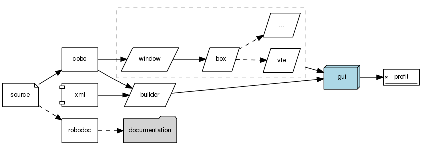

TABLE OF CONTENTS
- cobweb/cobweb-gtk
- cobweb/builder-get-object
- cobweb/builder-signal-attach
- cobweb/entry-get-text
- cobweb/entry-set-text
- cobweb/gtk-go
- cobweb/hide-widget
- cobweb/new-box
- cobweb/new-builder
- cobweb/new-button
- cobweb/new-checkbutton
- cobweb/new-entry
- cobweb/new-frame
- cobweb/new-image
- cobweb/new-label
- cobweb/new-scrolled-window
- cobweb/new-spinner
- cobweb/new-textview
- cobweb/new-vte
- cobweb/new-window
- cobweb/rundown-signals
- cobweb/set-sensitive-widget
- cobweb/show-widget
- cobweb/signal-attach
- cobweb/textview-get-text
- cobweb/textview-set-text
- cobweb/cobweb-delete-event
- cobweb/cobweb-gtk-button-clicked
- cobweb/cobweb-gtk-checkbutton-clicked
- cobweb/cobweb-gtk-entry-activated
- cobweb/help-about-gtk
- cobweb/see-textview-gtk
cobweb-gtk
AUTHOR
Brian Tiffin
COLOPHON
Part of the GNU Cobol free software project Copyright (C) 2014, Brian Tiffin Date: 20130308 Modified: 20140728 License: GNU General Public License, GPL, 3.0 or greater
PURPOSE
GNU Cobol functional bindings to GTK+, self test
TECTONICS
cobc -m -g -debug cobweb-gtk.cob voidcall.c `pkg-config --libs gtk+-3.0` robodoc --src ./ --doc cobwebgtk --multidoc --rc robocob.rc
SYNOPSIS
SOURCE
REPLACE ==FIELDSIZE== BY ==80== ==AREASIZE== BY ==32768==. id identification division. program-id. cobweb-gtk. environment division. configuration section. repository. function new-builder function new-window function new-scrolled-window function new-box function new-frame function new-image function new-label function new-entry function new-textview function new-button function new-checkbutton function new-spinner function new-vte function rundown-signals function signal-attach function builder-signal-attach function builder-get-object function textview-set-text function gtk-go function all intrinsic. data data division. working-storage section. 01 HORIZONTAL usage binary-long value 0. 01 VERTICAL usage binary-long value 1. 01 newline pic x value x"0a". 01 extraneous usage binary-long. 01 gtk-builder-data external. 05 gtk-builder usage pointer. 05 gtk-builtwindow usage pointer. 01 builder-connect usage binary-long value 0. 01 GTK-WINDOW-TOPLEVEL usage binary-long value 0. 01 gtk-window-data external. 05 gtk-window usage pointer. 01 width-hint usage binary-long value 500. 01 height-hint usage binary-long value 48. 01 gtk-box-data. 05 gtk-box usage pointer. 01 orientation usage binary-long. 01 spacing usage binary-long value 8. 01 homogeneous usage binary-long value 0. 01 gtk-scrolled-window-data external. 05 gtk-scrolled-window usage pointer. 01 gtk-frame-data. 05 gtk-frame usage pointer. 01 gtk-label-data. 05 gtk-label usage pointer. 01 gtk-entry-data. 05 gtk-entry usage pointer. 01 entry-chars usage binary-long value 8. 01 gtk-button-data external. 05 gtk-button usage pointer. 01 gtk-checkbutton-data. 05 gtk-checkbutton usage pointer. 01 gtk-image-data. 05 gtk-image usage pointer. 01 gtk-spinner-data. 05 gtk-spinner usage pointer. 01 gtk-vte-data. 05 gtk-vte usage pointer. 01 vte-cols usage binary-c-long value 24. 01 vte-rows usage binary-c-long value 8. code procedure division. display " *> cobweb-gtk UDF repository follows" upon syserr end-display display " environment division." newline " configuration section." newline upon syserr end-display display " repository." newline " function new-builder" newline " function new-window" newline " function new-scrolled-window" newline " function new-box" newline " function new-frame" newline " function new-image" newline " function new-label" newline " function new-entry" newline " function new-button" newline " function new-checkbutton" newline " function new-spinner" newline " function new-vte" newline " function new-textview" newline " function rundown-signals" newline " function signal-attach" newline " function builder-signal-attach" newline " function builder-get-object" newline " function show-widget" newline " function hide-widget" newline " function set-sensitive-widget" newline " function entry-get-text" newline " function entry-set-text" newline " function textview-get-text" newline " function textview-set-text" newline " function gtk-go" newline " function all intrinsic." end-display *> test basic windowing move new-window("cobweb-gtk", GTK-WINDOW-TOPLEVEL, width-hint, height-hint) to gtk-window-data move new-box(gtk-window, HORIZONTAL, spacing, homogeneous) to gtk-box-data move new-frame(gtk-box, "GTK+ frame") to gtk-frame-data move new-scrolled-window(gtk-frame, NULL, NULL) to gtk-scrolled-window-data move new-image(gtk-box, "blue66.png") to gtk-image-data move new-label(gtk-box, "Label") to gtk-label-data move new-entry(gtk-box, entry-chars, "cobweb-gtk-entry-activated") to gtk-entry-data move new-button(gtk-box, "Button", "cobweb-gtk-button-clicked") to gtk-button-data move new-checkbutton(gtk-box, "Check", 0 "cobweb-gtk-checkbutton-clicked") to gtk-checkbutton-data move new-vte(gtk-scrolled-window, "/bin/sh", vte-cols, vte-rows) to gtk-vte-data move new-spinner(gtk-box) to gtk-spinner-data move gtk-go(gtk-window) to extraneous *> Control can pass back and forth to COBOL subprograms, *> by event, but control flow stops above, until the *> window is torn down and the event loop exits display "GNU Cobol: first GTK eventloop terminated normally" upon syserr end-display *> ******************************************************** *> Demonstrate GTKBuilder automation *> In this case, using the sample included in the GTK+ Builder *> tutorial by Micah Carrick move new-builder("cobweb-sample.xml", builder-connect) to gtk-builder-data *> attach handlers move builder-signal-attach( gtk-builder, "about_menu_item", "activate", "help-about-gtk") to extraneous move builder-signal-attach( gtk-builder, "save_menu_item", "activate", "see-textview-gtk") to extraneous *> set some initial text move textview-set-text( builder-get-object(gtk-builder, "text_view"), "Display this text" & x"0a" & "by clicking File/Save") to extraneous *> #### DISABLED TEST #### *> move gtk-go(gtk-builtwindow) to extraneous display "GNU Cobol: builder GTK eventloop terminated normally" upon syserr end-display done goback. end program cobweb-gtk.
builder-get-object
PURPOSE
Get a builder object by id name
SOURCE
id identification division. function-id. builder-get-object. environment division. configuration section. repository. function all intrinsic. data data division. link linkage section. 01 gtk-builder usage pointer. 01 builder-idname pic x any length. 01 gtk-widget-data. 05 gtk-widget usage pointer. code procedure division using gtk-builder builder-idname returning gtk-widget-data. call "gtk_builder_get_object" using by value gtk-builder by content concatenate(trim(builder-idname), x"00") returning gtk-widget end-call done goback. end function builder-get-object.
builder-signal-attach
PURPOSE
Attach a builder callback handler, by XML object name
INPUT
builder, object name, event, callback
SOURCE
id identification division. function-id. builder-signal-attach. environment division. configuration section. repository. function signal-attach function all intrinsic. data data division. working-storage section. 01 gtk-widget usage pointer. link linkage section. 01 gtk-builder usage pointer. 01 builder-name pic x any length. 01 builder-event pic x any length. 01 callback-byname pic x any length. 01 extraneous usage binary-long. code procedure division using gtk-builder builder-name builder-event callback-byname returning extraneous. *> look up the object name call "gtk_builder_get_object" using by value gtk-builder by content concatenate(trim(builder-name), x"00") returning gtk-widget end-call if gtk-widget not equal null then move signal-attach(gtk-widget, builder-event, callback-byname) to extraneous end-if done goback. end function builder-signal-attach.
entry-get-text
PURPOSE
Get the text from an entry widget
SOURCE
id identification division. function-id. entry-get-text. environment division. configuration section. repository. function all intrinsic. data data division. working-storage section. 01 gtk-text-entry usage pointer. 01 gtk-text-buffer pic x(FIELDSIZE) based. link linkage section. 01 gtk-entry usage pointer. 01 the-text-entry pic x(FIELDSIZE). code procedure division using gtk-entry returning the-text-entry. call "gtk_entry_get_text" using by value gtk-entry returning gtk-text-entry end-call if gtk-text-entry not equal null then set address of gtk-text-buffer to gtk-text-entry initialize the-text-entry string gtk-text-buffer delimited by x"00" into the-text-entry end-string end-if done goback. end function entry-get-text.
entry-set-text
PURPOSE
Set the text of an entry widget
SOURCE
id identification division. function-id. entry-set-text. environment division. configuration section. repository. function all intrinsic. data data division. link linkage section. 01 gtk-entry usage pointer. 01 the-text-entry pic x any length. 01 extraneous usage binary-long. code procedure division using gtk-entry the-text-entry returning extraneous. call "gtk_entry_set_text" using by value gtk-entry by content function concatenate( function trim(the-text-entry), x"00") returning omitted end-call done goback. end function entry-set-text.
gtk-go
PURPOSE
Start the GTK+ event loop, only returns after rundown
INPUT
gtk-window pointer (starting with widget_show_all)
SOURCE
id identification division. function-id. gtk-go. environment division. configuration section. repository. function all intrinsic. data data division. link linkage section. 01 gtk-window usage pointer. 01 extraneous usage binary-long. code procedure division using gtk-window returning extraneous. *> ready to display call "gtk_widget_show_all" using by value gtk-window returning omitted end-call *> Enter the GTK event loop call "gtk_main" returning omitted end-call done goback. end function gtk-go.
hide-widget
PURPOSE
Inform GTK to mark the widget invisible
INPUT
gtk-widget pointer
SOURCE
id identification division. function-id. hide-widget. environment division. configuration section. repository. function all intrinsic. data data division. link linkage section. 01 gtk-widget usage pointer. 01 extraneous usage binary-long. code procedure division using gtk-widget returning extraneous. call "gtk_widget_hide" using by value gtk-widget returning omitted end-call done goback. end function hide-widget.
new-box
PURPOSE
Define a new container
INPUT
gtk-window/widget pointer orientation 0 across, 1 up down spacing between contained items do all the widgets try and keep the same size
OUTPUT
gtk-box-record, first field pointer
SOURCE
id identification division. function-id. new-box. environment division. configuration section. repository. function all intrinsic. data data division. link linkage section. 01 gtk-window usage pointer. 01 gtk-box-data. 05 gtk-box usage pointer. 01 orientation usage binary-long. 01 spacing usage binary-long. 01 homogeneous usage binary-long. code procedure division using gtk-window orientation spacing homogeneous returning gtk-box-data. *> Define a container. Boxey, but nice. call "gtk_box_new" using by value orientation by value spacing *> pixels between widgets returning gtk-box end-call call "gtk_box_set_homogeneous" using by value gtk-box by value homogeneous *> TRUE for equal size returning omitted end-call *> Add the box to the window call "gtk_container_add" using by value gtk-window by value gtk-box returning omitted end-call done goback. COOL end function new-box.
new-builder
PURPOSE
Use GTKBuilder to create an entire window and widget set
INPUT
XML layout filename pic x any boolean, auto-connect signals or not
OUTPUT
gtk-builder-record with gtk-builder and gtk-window
SOURCE
id identification division. function-id. new-builder. environment division. configuration section. repository. function rundown-signals function all intrinsic. data data division. working-storage section. 01 extraneous usage binary-long. 01 xmlload-status usage binary-long. linkage section. link 01 builder-xmlfile pic x any length. 01 builder-connect usage binary-long. 01 gtk-builder-data. 05 gtk-builder usage pointer. 05 gtk-builtwindow usage pointer. code procedure division using builder-xmlfile builder-connect returning gtk-builder-data. call "gtk_builder_new" returning gtk-builder end-call call "gtk_builder_add_from_file" using by value gtk-builder by content concatenate(trim(builder-xmlfile), x"00") by value 0 returning xmlload-status end-call call "gtk_builder_get_object" using by value gtk-builder by content z"window" returning gtk-builtwindow end-call *> *> If event handlers are in COBOL, the automatic signal connect *> won't work properly for any void signatures *> Always attach the run down signals, just because. *> if builder-connect not equal 0 then call "gtk_builder_connect_signals" using by value gtk-builder by value 0 returning omitted end-call else move rundown-signals(gtk-builtwindow) to extraneous end-if done goback. end function new-builder.
new-button
PURPOSE
Define a new button.
INPUT
gtk-container button-label pic x any button-callback pic x any
OUTPUT
gtk-button-record reference, first field pointer
SOURCE
id identification division. function-id. new-button. environment division. configuration section. repository. function signal-attach function all intrinsic. data data division. working-storage section. 01 extraneous usage binary-long. link linkage section. 01 gtk-container usage pointer. 01 gtk-button-data. 05 gtk-button usage pointer. 01 button-label pic x any length. 01 button-callback pic x any length. code procedure division using gtk-container button-label button-callback returning gtk-button-data. *> Add a labelled button call "gtk_button_new_with_label" using by content concatenate(trim(button-label), x"00") returning gtk-button end-call *> Add the button to the container call "gtk_container_add" using by value gtk-container by value gtk-button returning omitted end-call *> Connect handler to clicked move signal-attach(gtk-button, "clicked", button-callback) to extraneous done goback. end function new-button.
new-checkbutton
PURPOSE
Define a new checkbutton.
INPUT
gtk-container
button-label pic x any
button-value usage binary-long
button-callback pic x any
OUTPUT
gtk-checkbutton-record reference, first field pointer
SOURCE
id identification division. function-id. new-checkbutton. environment division. configuration section. repository. function signal-attach function all intrinsic. data data division. working-storage section. 01 extraneous usage binary-long. link linkage section. 01 gtk-container usage pointer. 01 button-label pic x any length. 01 button-value usage binary-long. 01 button-callback pic x any length. 01 gtk-checkbutton-data. 05 gtk-checkbutton usage pointer. code procedure division using gtk-container button-label button-value button-callback returning gtk-checkbutton-data. *> Add a labelled button call "gtk_check_button_new_with_label" using by content concatenate(trim(button-label), x"00") returning gtk-checkbutton end-call *> Set initial value call "gtk_toggle_button_set_active" using by value gtk-checkbutton by value button-value returning omitted end-call *> Add the button to the container call "gtk_container_add" using by value gtk-container by value gtk-checkbutton returning omitted end-call *> Connect handler to clicked move signal-attach(gtk-checkbutton, "clicked", button-callback) to extraneous done goback. end function new-checkbutton.
new-entry
PURPOSE
Define a new single line text entry
INPUT
gtk-container pointer entry-size integer entry-callback
OUTPUT
gtk-entry-record, first field pointer
SOURCE
id identification division. function-id. new-entry. environment division. configuration section. repository. function signal-attach function all intrinsic. data data division. working-storage section. 01 extraneous usage binary-long. link linkage section. 01 gtk-container usage pointer. 01 entry-chars usage binary-long. 01 entry-callback pic x any length. 01 gtk-entry-data. 05 gtk-entry usage pointer. code procedure division using gtk-container entry-chars entry-callback returning gtk-entry-data. *> Add a single line text entry call "gtk_entry_new" returning gtk-entry end-call call "gtk_entry_set_width_chars" using by value gtk-entry by value entry-chars returning omitted end-call *> Add the entry to the container call "gtk_container_add" using by value gtk-container by value gtk-entry returning omitted end-call *> Connect a signal to "activate". move signal-attach(gtk-entry, "activate", entry-callback) to extraneous done goback. end function new-entry.
new-frame
PURPOSE
Define a new framed container
INPUT
gtk-container pointer frame-label pic x any
OUTPUT
gtk-frame-record, first field pointer
SOURCE
id identification division. function-id. new-frame. environment division. configuration section. repository. function all intrinsic. data data division. link linkage section. 01 gtk-container usage pointer. 01 gtk-frame-data. 05 gtk-frame usage pointer. 01 the-label pic x any length. code procedure division using gtk-container the-label returning gtk-frame-data. *> Define a new frame call "gtk_frame_new" using by content concatenate(trim(the-label), x"00") returning gtk-frame end-call *> Add the frame to the window call "gtk_container_add" using by value gtk-container by value gtk-frame returning omitted end-call done goback. COOL end function new-frame.
new-image
PURPOSE
Define a new image. Various graphic formats supported
INPUT
gtk-container pointer reference graphics file name
OUTPUT
gtk-image-record reference, first field is pointer
SOURCE
id identification division. function-id. new-image. environment division. configuration section. repository. function all intrinsic. data data division. working-storage section. 01 extraneous usage binary-long. link linkage section. 01 gtk-container usage pointer. 01 image-filename pic x any length. 01 gtk-image-data. 05 gtk-image usage pointer. code procedure division using gtk-container image-filename returning gtk-image-data. *> Create an image from file call "gtk_image_new_from_file" using by content concatenate(trim(image-filename), x"00") returning gtk-image end-call *> Add the image to the container call "gtk_container_add" using by value gtk-container by value gtk-image returning omitted end-call done goback. end function new-image.
new-label
PURPOSE
Define a label
INPUT
gtk-container pointer label-text pic x any
OUTPUT
gtk-label-record, first field pointer
SOURCE
id identification division. function-id. new-label. environment division. configuration section. repository. function all intrinsic. data data division. link linkage section. 01 gtk-container usage pointer. 01 label-text pic x any length. 01 gtk-label-data. 05 gtk-label usage pointer. code procedure division using gtk-container label-text returning gtk-label-data. *> Add a label call "gtk_label_new" using by content concatenate(trim(label-text), x"00") returning gtk-label end-call *> Add the label to the container call "gtk_container_add" using by value gtk-container by value gtk-label returning omitted end-call done goback. end function new-label.
new-scrolled-window
PURPOSE
Define a new scrolled-window
INPUT
gtk-container pointer horizontal-adjust pointer vertical-adjust pointer
OUTPUT
gtk-scrolled-window-record, first field pointer
SOURCE
id identification division. function-id. new-scrolled-window. environment division. configuration section. repository. function all intrinsic. data data division. link linkage section. 01 gtk-container usage pointer. 01 horizontal-adjustment usage pointer. 01 vertical-adjustment usage pointer. 01 gtk-scrolled-window-data. 05 gtk-scrolled-window usage pointer. code procedure division using gtk-container horizontal-adjustment vertical-adjustment returning gtk-scrolled-window-data. *> Define a scrolled-window call "gtk_scrolled_window_new" using by reference null null returning gtk-scrolled-window end-call *> Add the frame to the window call "gtk_container_add" using by value gtk-container by value gtk-scrolled-window returning omitted end-call done goback. COOL end function new-scrolled-window.
new-spinner
PURPOSE
Define a new spinner, set it spinning
INPUT
gtk-container pointer reference
OUTPUT
gtk-spinner-record reference, first field pointer
SOURCE
id identification division. function-id. new-spinner. environment division. configuration section. repository. function all intrinsic. data data division. working-storage section. 01 extraneous usage binary-long. link linkage section. 01 gtk-container usage pointer. 01 gtk-spinner-data. 05 gtk-spinner usage pointer. code procedure division using gtk-container returning gtk-spinner-data. *> Create an image from file call "gtk_spinner_new" returning gtk-spinner end-call *> Add the image to the container call "gtk_container_add" using by value gtk-container by value gtk-spinner returning omitted end-call *> start spinning call "gtk_spinner_start" using by value gtk-spinner returning omitted end-call done goback. end function new-spinner.
new-textview
PURPOSE
Define a multi-line text entry
INPUT
gtk-container pointer entry-callback pic x any
OUTPUT
gtk-textview-record, first field pointer
SOURCE
id identification division. function-id. new-textview. environment division. configuration section. repository. function signal-attach function all intrinsic. data data division. working-storage section. 01 extraneous usage binary-long. link linkage section. 01 gtk-container usage pointer. 01 entry-callback pic x any length. 01 gtk-textview-data. 05 gtk-textview usage pointer. code procedure division using gtk-container entry-callback returning gtk-textview-data. *> Add a multiline text entry call "gtk_textview_new" returning gtk-textview end-call *> Add the entry to the container call "gtk_container_add" using by value gtk-container by value gtk-textview returning omitted end-call *> Connect activate signal, wrapped in voidcall move signal-attach(gtk-textview, "activate", entry-callback) to extraneous done goback. end function new-textview.
new-vte
PURPOSE
Define a new virtual terminal
INPUT
command, columns, rows
SOURCE
id identification division. function-id. new-vte. environment division. configuration section. repository. function all intrinsic. data data division. working-storage section. 01 extraneous usage binary-long. link linkage section. 01 gtk-container usage pointer. 01 vte-command pic x any length. 01 vte-cols usage binary-c-long. 01 vte-rows usage binary-c-long. 01 gtk-vte-data. 05 gtk-vte usage pointer. code procedure division using gtk-container vte-command vte-cols vte-rows returning gtk-vte-data. *> Create a virtual terminal call "vte_terminal_new" returning gtk-vte end-call call "vte_terminal_set_size" using by value gtk-vte vte-cols vte-rows returning omitted end-call *> Start session with command, in current working dir call "vte_terminal_fork_command" using by value gtk-vte by content concatenate(trim(vte-command), x"00") by reference null null z"." by value 0 0 0 returning omitted end-call *> Add the vte to the container call "gtk_container_add" using by value gtk-container by value gtk-vte returning omitted end-call done goback. end function new-vte.
new-window
PURPOSE
Define a new top level window.
INPUT
window-title pic x any window-type width hint height hint
OUTPUT
gtk-window-record, first field pointer
SOURCE
id identification division. function-id. new-window. environment division. configuration section. repository. function rundown-signals function all intrinsic. data division. data working-storage section. 01 GTK-WINDOW-TOPLEVEL usage binary-long value 0. 01 extraneous usage binary-long. linkage section. link 01 window-title pic x any length. 01 window-type usage binary-short. 01 width-hint usage binary-long. 01 height-hint usage binary-long. 01 gtk-window-data. 05 gtk-window usage pointer. code procedure division using window-title window-type width-hint height-hint returning gtk-window-data. *> Start up the GIMP/Gnome Tool Kit call "gtk_init" using by value 0 *> argc int by value 0 *> argv pointer to pointer returning omitted *> void return, requires cobc 2010+ on exception display "gtk_init link error, see pkg-config --libs gtk+-3.0" upon syserr end-display bail stop run returning 1 end-call *> Create a new window, returning handle as pointer call "gtk_window_new" using by value window-type *> it's a zero or a 1 popup returning gtk-window *> and remember the handle end-call *> More fencing, skimped on after this first test if gtk-window equal null then display "GTK service error; gtk_window_new NULL" upon syserr end-display bail stop run returning 1 end-if *> Hint for window sizing call "gtk_window_set_default_size" using by value gtk-window *> by value is used to get the C address by value width-hint by value height-hint returning omitted *> another void end-call *> Put in the title call "gtk_window_set_title" using by value gtk-window *> pass the C handle by content concatenate(trim(window-title), x"00") returning omitted end-call *> Connect rundown signals. move rundown-signals(gtk-window) to extraneous done goback. end function new-window.
rundown-signals
PURPOSE
Attach default GTK+ rundown handlers
INPUT
gtk-window pointer
SOURCE
id identification division. function-id. rundown-signals. environment division. configuration section. repository. function all intrinsic. data data division. working-storage section. 01 gtk-callback usage program-pointer. 01 gtk-quit-id usage pointer. link linkage section. 01 gtk-window usage pointer. 01 extraneous usage binary-long. code procedure division using gtk-window returning extraneous. *> Connect rundown signals to window. set gtk-callback to entry "gtk_main_quit" call "g_signal_connect_data" using by value gtk-window by reference z"destroy" *> with inline Z string by value gtk-callback *> function call back pointer by value 0 *> pointer to data by value 0 *> closure notify to manage data by value 0 *> connect before or after flag returning gtk-quit-id *> not used end-call set gtk-callback to entry "cobweb-delete-event" call "g_signal_connect_data" using by value gtk-window by reference z"delete_event" by value gtk-callback by value 0 by value 0 by value 0 returning gtk-quit-id end-call done goback. end function rundown-signals.
set-sensitive-widget
PURPOSE
set the widget interactive state
INPUT
gtk-widget pointer
SOURCE
id identification division. function-id. set-sensitive-widget. environment division. configuration section. repository. function all intrinsic. data data division. link linkage section. 01 gtk-widget usage pointer. 01 onoff usage binary-long. 01 extraneous usage binary-long. code procedure division using gtk-widget returning extraneous. call "gtk_widget_set_sensitive" using by value gtk-widget by value onoff returning omitted end-call done goback. end function set-sensitive-widget.
show-widget
PURPOSE
Inform GTK to render the widget
INPUT
gtk-widget pointer
SOURCE
id identification division. function-id. show-widget. environment division. configuration section. repository. function all intrinsic. data data division. link linkage section. 01 gtk-widget usage pointer. 01 extraneous usage binary-long. code procedure division using gtk-widget returning extraneous. call "gtk_widget_show" using by value gtk-widget returning omitted end-call done goback. end function show-widget.
signal-attach
PURPOSE
Attach a callback handler, wrapped in a void return
INPUT
gtk-widget pointer the-event-name pic x any the-handler-name pic x any
SOURCE
id identification division. function-id. signal-attach. environment division. configuration section. repository. function all intrinsic. data data division. working-storage section. 01 cobweb-callback usage program-pointer. 01 gtk-void-callback usage program-pointer. 01 gtk-quit-id usage pointer. link linkage section. 01 gtk-widget usage pointer. 01 the-trigger pic x any length. 01 callback-byname pic x any length. 01 extraneous usage binary-long. code procedure division using gtk-widget the-trigger callback-byname returning extraneous. *> Connect signal to action, wrapped in voidcall set cobweb-callback to entry callback-byname set gtk-void-callback to entry "voidcall" call "g_signal_connect_data" using by value gtk-widget by content concatenate(trim(the-trigger), x"00") by value gtk-void-callback *> function call back pointer by value cobweb-callback *> pointer to COBOL proc by value 0 *> closure notify to manage data by value 0 *> connect before or after flag returning gtk-quit-id *> not used end-call done goback. end function signal-attach.
textview-get-text
PURPOSE
Get the text from a multiline text view
SOURCE
id identification division. function-id. textview-get-text. environment division. configuration section. repository. function all intrinsic. data data division. working-storage section. 01 gtk-textbuffer usage pointer. 01 text-pointer usage pointer. 01 text-buffer pic x(AREASIZE) based. 01 gtk-start pic x(64). 01 gtk-end pic x(64). 01 hidden-chars usage binary-long value 0. link linkage section. 01 gtk-textview usage pointer. 01 the-text-area pic x(AREASIZE). code procedure division using gtk-textview returning the-text-area. *> retrieve the textbuffer of the textview call "gtk_text_view_get_buffer" using by value gtk-textview returning gtk-textbuffer end-call *> get all the text, from start to end if gtk-textbuffer not equal null then call "gtk_text_buffer_get_start_iter" using by value gtk-textbuffer by reference gtk-start returning omitted end-call call "gtk_text_buffer_get_end_iter" using by value gtk-textbuffer by reference gtk-end returning omitted end-call call "gtk_text_buffer_get_text" using by value gtk-textbuffer by reference gtk-start gtk-end by value hidden-chars returning text-pointer end-call if text-pointer not equal null then set address of text-buffer to text-pointer initialize the-text-area string text-buffer delimited by x"00" into the-text-area end-string end-if end-if done goback. end function textview-get-text.
textview-set-text
PURPOSE
Set the text of a multiline text view
SOURCE
id identification division. function-id. textview-set-text. environment division. configuration section. repository. function all intrinsic. data data division. working-storage section. 01 gtk-textbuffer usage pointer. 01 the-text-area-len usage binary-long. link linkage section. 01 gtk-textview usage pointer. 01 the-text-area pic x any length. 01 extraneous usage binary-long. code procedure division using gtk-textview the-text-area returning extraneous. *> retrieve the textbuffer of the textview call "gtk_text_view_get_buffer" using by value gtk-textview returning gtk-textbuffer end-call *> set the buffer text move length(trim(the-text-area)) to the-text-area-len if gtk-textbuffer not equal null then call "gtk_text_buffer_set_text" using by value gtk-textbuffer by reference the-text-area by value the-text-area-len returning omitted end-call end-if done goback. end function textview-set-text.
cobweb-delete-event
[ Top ] [ Subprogram ]
PURPOSE
application layer default GTK rundown handler Returns false, allowing window close
SOURCE
id identification division. program-id. cobweb-delete-event. data division. working-storage section. 01 working-flag usage binary-long value 0. linkage section. 01 gtk-widget usage pointer. 01 gdk-event usage pointer. 01 gtk-data usage pointer. 01 the-flag usage binary-long. procedure division using by value gtk-widget gdk-event gtk-data returning the-flag. *> return false, allow the destroy signal set address of the-flag to address of working-flag done goback. end program cobweb-delete-event.
cobweb-gtk-button-clicked
[ Top ] [ Subprogram ]
PURPOSE
default button click handler
INPUT
gtk-widget pointer gtk-data pointer
SOURCE
id identification division. program-id. cobweb-gtk-button-clicked. data division. linkage section. 01 gtk-widget usage pointer. 01 gtk-data usage pointer. procedure division using by value gtk-widget gtk-data. display "clicked " gtk-widget " with " gtk-data upon syserr end-display done goback. end program cobweb-gtk-button-clicked.
cobweb-gtk-checkbutton-clicked
[ Top ] [ Subprogram ]
PURPOSE
default checkbutton click handler
INPUT
gtk-widget pointer gtk-data pointer
SOURCE
id identification division. program-id. cobweb-gtk-checkbutton-clicked. data division. working-storage section. 01 gtk-button-data external. 05 gtk-button usage pointer. 01 gtk-sensitivity usage binary-long value 0. linkage section. 01 gtk-widget usage pointer. 01 gtk-data usage pointer. procedure division using by value gtk-widget gtk-data. display "clicked (check)" gtk-widget " with " gtk-data upon syserr end-display call "gtk_toggle_button_get_active" using by value gtk-widget returning gtk-sensitivity end-call call "gtk_widget_set_sensitive" using by value gtk-button by value gtk-sensitivity end-call done goback. end program cobweb-gtk-checkbutton-clicked.
cobweb-gtk-entry-activated
[ Top ] [ Subprogram ]
PURPOSE
default text entry activate handler
SOURCE
id identification division. program-id. cobweb-gtk-entry-activated. data division. linkage section. 01 gtk-widget usage pointer. 01 gtk-data usage pointer. procedure division using by value gtk-widget gtk-data. display "activated " gtk-widget " with " gtk-data upon syserr end-display done goback. end program cobweb-gtk-entry-activated.
help-about-gtk
[ Top ] [ System Test ]
PURPOSE
Display an application Help/About dialog box
SOURCE
id identification division. program-id. help-about-gtk. data data division. working-storage section. 01 gtk-window-data external. 05 gtk-window usage pointer. linkage section. 01 gtk-widget usage pointer. 01 gtk-data usage pointer. code procedure division using by value gtk-widget gtk-data. call "gtk_show_about_dialog" using by value gtk-window by content z"version", z"0.1", z"comments", z"GTK+ and Glade3 GUI Programming Tutorial" z"copyright", z"Copyright 2007 Micah Carrick" z"website", z"http://www.micahcarrick.com", z"program-name", z"GTK+ Text Editor", z"logo-icon-name", z"gtk-edit", by reference null end-call done goback. end program help-about-gtk.
see-textview-gtk
[ Top ] [ System Test ]
PURPOSE
Self test connected to File/Save
SOURCE
id identification division. program-id. see-textview-gtk. environment division. configuration section. repository. function textview-get-text function all intrinsic. data data division. working-storage section. 01 gtk-builder-data external. 05 gtk-builder usage pointer. 05 gtk-builtwindow usage pointer. 01 gtk-textview usage pointer. linkage section. 01 gtk-widget usage pointer. 01 gtk-data usage pointer. code procedure division using by value gtk-widget gtk-data. call "gtk_builder_get_object" using by value gtk-builder by content concatenate(trim("text_view"), x"00") returning gtk-textview end-call display trim(textview-get-text(gtk-textview)) end-display done goback. end program see-textview-gtk.